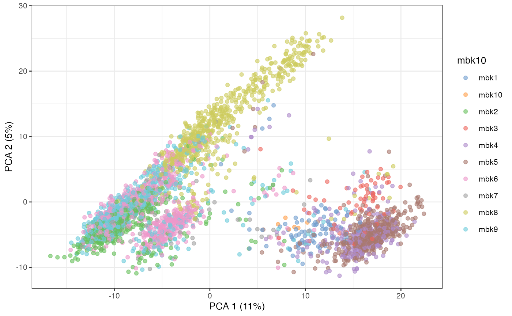
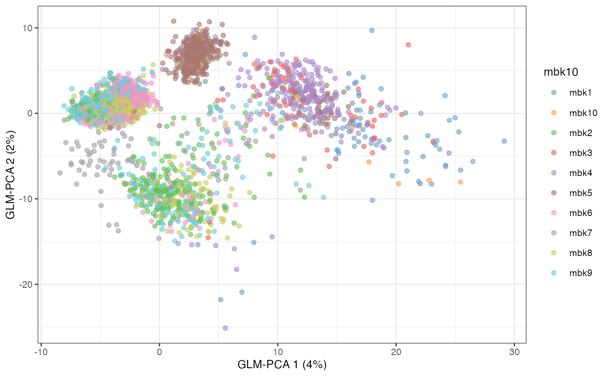
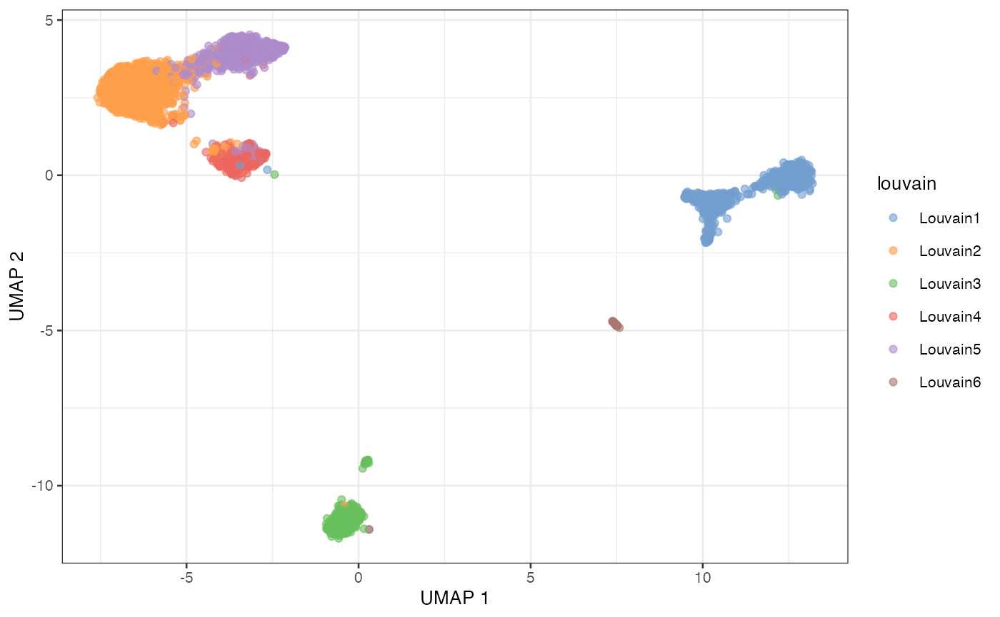
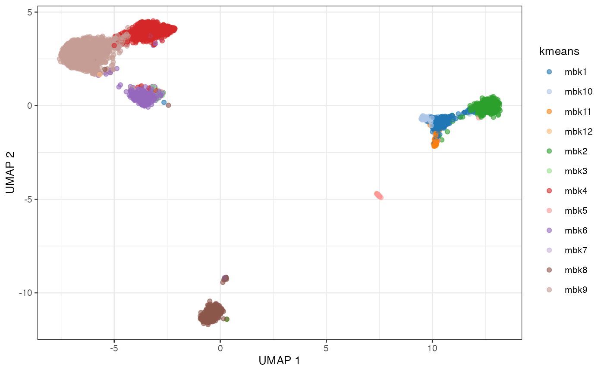
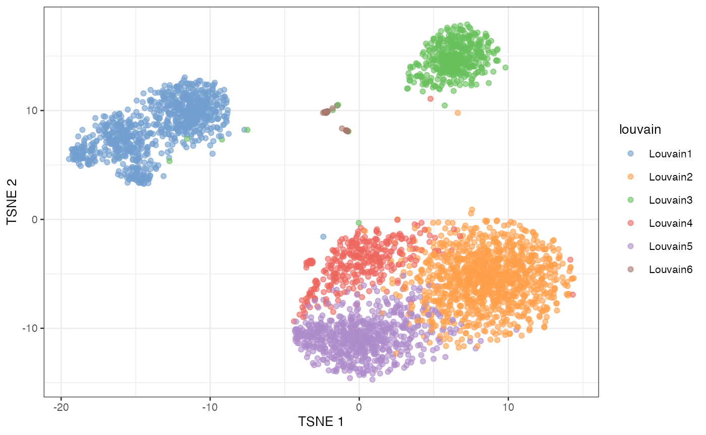
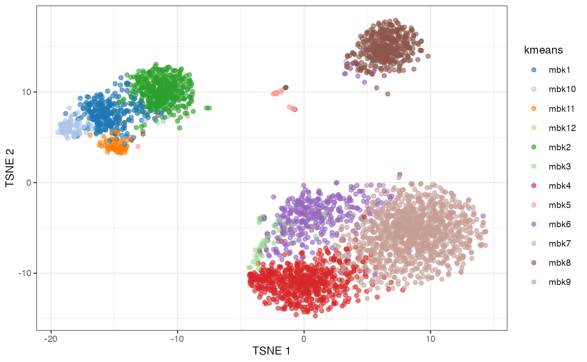

adv-single-cell-01.RmdSingleCellExperiment object in a
.HDF5 file format for large-scale single-cell data.This tutorial gives a demo of large-scale clustering in the Bioconductor using the DelayedArray framework. DelayedArray is like an ordinary array in R, but allows for the data to be in-memory, on-disk in a file, or even hosted on a remote server.
We will showcase an end-to-end clustering pipeline, starting from the count data matrix stored in HDF5 (similar to what one would download from the HCA data portal) all the way to visualization and interpretation of the clustering results.
scran normalization + PCAglmpca with scry
Using these reduced dimensions, we present two types of clustering:
mbkmeans)While we use a small-ish dataset for this demo for convenience, the code is computationally efficient even for (very) large datasets.
sce <- TENxPBMCData("pbmc4k")
sce## class: SingleCellExperiment
## dim: 33694 4340
## metadata(0):
## assays(1): counts
## rownames(33694): ENSG00000243485 ENSG00000237613 ... ENSG00000277475
## ENSG00000268674
## rowData names(3): ENSEMBL_ID Symbol_TENx Symbol
## colnames: NULL
## colData names(11): Sample Barcode ... Individual Date_published
## reducedDimNames(0):
## mainExpName: NULL
## altExpNames(0):
counts(sce)## <33694 x 4340> sparse matrix of class DelayedMatrix and type "integer":
## [,1] [,2] [,3] [,4] ... [,4337] [,4338] [,4339]
## ENSG00000243485 0 0 0 0 . 0 0 0
## ENSG00000237613 0 0 0 0 . 0 0 0
## ENSG00000186092 0 0 0 0 . 0 0 0
## ENSG00000238009 0 0 0 0 . 0 0 0
## ENSG00000239945 0 0 0 0 . 0 0 0
## ... . . . . . . . .
## ENSG00000277856 0 0 0 0 . 0 0 0
## ENSG00000275063 0 0 0 0 . 0 0 0
## ENSG00000271254 0 0 0 0 . 0 0 0
## ENSG00000277475 0 0 0 0 . 0 0 0
## ENSG00000268674 0 0 0 0 . 0 0 0
## [,4340]
## ENSG00000243485 0
## ENSG00000237613 0
## ENSG00000186092 0
## ENSG00000238009 0
## ENSG00000239945 0
## ... .
## ENSG00000277856 0
## ENSG00000275063 0
## ENSG00000271254 0
## ENSG00000277475 0
## ENSG00000268674 0
seed(counts(sce))## An object of class "HDF5ArraySeed"
## Slot "filepath":
## [1] "/Users/stephaniehicks/Library/Caches/org.R-project.R/R/ExperimentHub/13b087bcbb296_1611"
##
## Slot "name":
## [1] "/counts"
##
## Slot "as_sparse":
## [1] TRUE
##
## Slot "type":
## [1] NA
##
## Slot "dim":
## [1] 33694 4340
##
## Slot "chunkdim":
## [1] 512 66
##
## Slot "first_val":
## [1] 0In this tutorial, we use a small dataset for the sake of running all the code in a short amount of time. However, this workflow is designed for large data and it will run just fine with any sized dataset. For instance, we have analyzed 1.3 million cells on a machine with a moderately sized RAM (e.g., 64GB).
By running the code below, you will run the workflow on the [10X
Genomics 1.3 million cells dataset. (Warning: it takes some time!)
Alternatively, you can substitute the code below with your own data in
SingleCellExperiment format.
library(TENxBrainData)
sce <- TENxBrainData()
sceFirst, we use the scater package to compute a set of QC
measures and filter out the low-quality samples.
Here, we exclude those cells that have a too high percentage of mitochondrial genes or for which we detect too few genes.
sce <- addPerCellQC(sce,
subsets = list(Mito = grep("^MT-", rowData(sce)$Symbol_TENx)))
high_mito <- isOutlier(sce$subsets_Mito_percent,
nmads = 3, type="higher")
low_detection <- (sce$detected < 1000)
high_counts <- sce$sum > 45000
sce <- sce[,!high_mito & !low_detection & !high_counts]
sce## class: SingleCellExperiment
## dim: 33694 3401
## metadata(0):
## assays(1): counts
## rownames(33694): ENSG00000243485 ENSG00000237613 ... ENSG00000277475
## ENSG00000268674
## rowData names(3): ENSEMBL_ID Symbol_TENx Symbol
## colnames: NULL
## colData names(17): Sample Barcode ... subsets_Mito_percent total
## reducedDimNames(0):
## mainExpName: NULL
## altExpNames(0):Next, we remove the lowly expressed genes. Here, we keep only those genes that have at least 1 UMI in at least 5% of the data. These threshold are dataset-specific and may need to be taylored to specific applications.
num_reads <- 1
num_cells <- 0.01*ncol(sce)
keep <- which(DelayedArray::rowSums(counts(sce) >= num_reads ) >= num_cells)
sce <- sce[keep,]
sce## class: SingleCellExperiment
## dim: 10944 3401
## metadata(0):
## assays(1): counts
## rownames(10944): ENSG00000279457 ENSG00000228463 ... ENSG00000273748
## ENSG00000278817
## rowData names(3): ENSEMBL_ID Symbol_TENx Symbol
## colnames: NULL
## colData names(17): Sample Barcode ... subsets_Mito_percent total
## reducedDimNames(0):
## mainExpName: NULL
## altExpNames(0):These leaves us with length(keep) genes.
Here, we apply mbkmeans (k=10 and batch
size of 500) as a preliminary step to scran
normalization.
set.seed(19)
mbk <- mbkmeans(sce, whichAssay = "counts", reduceMethod = NA,
clusters=10, batch_size = 500)
sce$mbk10 <- paste0("mbk", mbk$Clusters)
table(mbk$Clusters)##
## 1 2 3 4 5 6 7 8 9 10
## 88 405 64 259 433 766 86 594 700 6We then compute the normalization factors and normalize the data.
sce <- computeSumFactors(sce, cluster=mbk$Clusters, min.mean = 0.1)
sce <- logNormCounts(sce)
sce## class: SingleCellExperiment
## dim: 10944 3401
## metadata(0):
## assays(2): counts logcounts
## rownames(10944): ENSG00000279457 ENSG00000228463 ... ENSG00000273748
## ENSG00000278817
## rowData names(3): ENSEMBL_ID Symbol_TENx Symbol
## colnames: NULL
## colData names(19): Sample Barcode ... mbk10 sizeFactor
## reducedDimNames(0):
## mainExpName: NULL
## altExpNames(0):Here, we compute the first 50 principal components using the top variable genes.
sce <- scater::runPCA(sce, ncomponents = 50,
ntop = 1000,
scale = TRUE,
BSPARAM = BiocSingular::RandomParam())
plotPCA(sce, colour_by = "mbk10")
An alternative to PCA on normalized data is to use the GLM-PCA
approach, implemented in the scry Bioconductor package.
Here, we use the faster, approximate approach that computes the null
residuals and runs PCA on them.
Other approaches implemented in Bioconductor for dimensionality
reduction include correspondence analysis (in the corral
package) and ZINB-WaVE (in the zinbwave and
NewWave packages).
sce <- nullResiduals(sce, assay="counts", type="deviance")
sce <- scater::runPCA(sce, ncomponents = 50,
ntop = 1000,
exprs_values = "binomial_deviance_residuals",
scale = TRUE, name = "GLM-PCA",
BSPARAM = BiocSingular::RandomParam())
plotReducedDim(sce, dimred = "GLM-PCA", colour_by = "mbk10")
Here, we use the GLM-PCA results to obtain the final cluster labels. We use two alternative approaches: Louvain and mini-batch k-means.
g <- buildSNNGraph(sce, k=10, use.dimred = "GLM-PCA")
lou <- igraph::cluster_louvain(g)
sce$louvain <- paste0("Louvain", lou$membership)
table(sce$louvain)##
## Louvain1 Louvain2 Louvain3 Louvain4 Louvain5 Louvain6
## 871 1057 442 337 654 40If you want more control on the resolution of the clustering, you can
use the Louvain implementation available in the resolution
package. Alternatively, the leiden package implements the
Leiden algorithm.
Mini-batch \(k\)-means is a faster version of \(k\)-means that uses only a random “mini-batch” of data at each iteration. The algorithm is fast enough to cluster the 1.3 million cell data in the space of the top 50 PC in under 30 seconds.
Here, we run it multiple times to select the value of \(k\) with the elbow method.
k_list <- seq(5, 20)
km_res <- lapply(k_list, function(k) {
mbkmeans(sce, clusters = k,
batch_size = 500,
reduceMethod = "GLM-PCA",
calc_wcss = TRUE)
})
wcss <- sapply(km_res, function(x) sum(x$WCSS_per_cluster))
plot(k_list, wcss, type = "b")##
## mbk1 mbk10 mbk11 mbk12 mbk2 mbk3 mbk4 mbk5 mbk6 mbk7 mbk8 mbk9
## 277 93 75 1 427 47 598 41 350 1 434 1057
table(sce$kmeans, sce$louvain)##
## Louvain1 Louvain2 Louvain3 Louvain4 Louvain5 Louvain6
## mbk1 277 0 0 0 0 0
## mbk10 93 0 0 0 0 0
## mbk11 74 0 0 0 0 1
## mbk12 0 1 0 0 0 0
## mbk2 425 0 1 0 0 1
## mbk3 0 0 0 44 3 0
## mbk4 0 13 0 2 583 0
## mbk5 1 0 2 0 0 38
## mbk6 1 35 8 287 19 0
## mbk7 0 0 1 0 0 0
## mbk8 0 3 430 0 1 0
## mbk9 0 1005 0 4 48 0We can use UMAP or t-SNE to visualize the clusters.
sce <- scater::runUMAP(sce, dimred = "GLM-PCA",
external_neighbors = TRUE,
BNPARAM = BiocNeighbors::AnnoyParam())
plotUMAP(sce, colour_by = "louvain")
plotUMAP(sce, colour_by = "kmeans")
sce <- scater::runTSNE(sce, dimred = "GLM-PCA",
external_neighbors = TRUE,
BNPARAM = BiocNeighbors::AnnoyParam())
plotTSNE(sce, colour_by = "louvain")
plotTSNE(sce, colour_by = "kmeans")
## R version 4.2.1 (2022-06-23)
## Platform: aarch64-apple-darwin21.5.0 (64-bit)
## Running under: macOS Monterey 12.4
##
## Matrix products: default
## BLAS: /opt/homebrew/Cellar/openblas/0.3.20/lib/libopenblasp-r0.3.20.dylib
## LAPACK: /opt/homebrew/Cellar/r/4.2.1/lib/R/lib/libRlapack.dylib
##
## locale:
## [1] en_US.UTF-8/en_US.UTF-8/en_US.UTF-8/C/en_US.UTF-8/en_US.UTF-8
##
## attached base packages:
## [1] stats4 stats graphics grDevices utils datasets methods
## [8] base
##
## other attached packages:
## [1] mbkmeans_1.12.0 scry_1.8.0
## [3] scran_1.24.0 scater_1.24.0
## [5] ggplot2_3.3.6 scuttle_1.6.2
## [7] TENxPBMCData_1.14.0 HDF5Array_1.24.1
## [9] rhdf5_2.40.0 DelayedArray_0.22.0
## [11] Matrix_1.4-1 SingleCellExperiment_1.18.0
## [13] SummarizedExperiment_1.26.1 Biobase_2.56.0
## [15] GenomicRanges_1.48.0 GenomeInfoDb_1.32.2
## [17] IRanges_2.30.0 S4Vectors_0.34.0
## [19] BiocGenerics_0.42.0 MatrixGenerics_1.8.1
## [21] matrixStats_0.62.0
##
## loaded via a namespace (and not attached):
## [1] AnnotationHub_3.4.0 BiocFileCache_2.4.0
## [3] systemfonts_1.0.4 igraph_1.3.2
## [5] gmp_0.6-5 BiocParallel_1.30.3
## [7] benchmarkme_1.0.8 digest_0.6.29
## [9] foreach_1.5.2 htmltools_0.5.2
## [11] viridis_0.6.2 fansi_1.0.3
## [13] magrittr_2.0.3 memoise_2.0.1
## [15] ScaledMatrix_1.4.0 doParallel_1.0.17
## [17] cluster_2.1.3 limma_3.52.2
## [19] Biostrings_2.64.0 pkgdown_2.0.5
## [21] colorspace_2.0-3 blob_1.2.3
## [23] rappdirs_0.3.3 ggrepel_0.9.1
## [25] textshaping_0.3.6 xfun_0.31
## [27] dplyr_1.0.9 crayon_1.5.1
## [29] RCurl_1.98-1.7 jsonlite_1.8.0
## [31] iterators_1.0.14 glue_1.6.2
## [33] gtable_0.3.0 zlibbioc_1.42.0
## [35] XVector_0.36.0 BiocSingular_1.12.0
## [37] Rhdf5lib_1.18.2 scales_1.2.0
## [39] DBI_1.1.3 edgeR_3.38.1
## [41] Rcpp_1.0.8.3 viridisLite_0.4.0
## [43] xtable_1.8-4 dqrng_0.3.0
## [45] bit_4.0.4 rsvd_1.0.5
## [47] metapod_1.4.0 httr_1.4.3
## [49] ellipsis_0.3.2 ClusterR_1.2.6
## [51] farver_2.1.0 pkgconfig_2.0.3
## [53] uwot_0.1.11 sass_0.4.1
## [55] dbplyr_2.2.1 locfit_1.5-9.5
## [57] utf8_1.2.2 labeling_0.4.2
## [59] tidyselect_1.1.2 rlang_1.0.3
## [61] later_1.3.0 AnnotationDbi_1.58.0
## [63] munsell_0.5.0 BiocVersion_3.15.2
## [65] tools_4.2.1 cachem_1.0.6
## [67] cli_3.3.0 generics_0.1.2
## [69] RSQLite_2.2.14 ExperimentHub_2.4.0
## [71] evaluate_0.15 stringr_1.4.0
## [73] fastmap_1.1.0 yaml_2.3.5
## [75] ragg_1.2.2 knitr_1.39
## [77] bit64_4.0.5 fs_1.5.2
## [79] purrr_0.3.4 KEGGREST_1.36.2
## [81] sparseMatrixStats_1.8.0 mime_0.12
## [83] compiler_4.2.1 rstudioapi_0.13
## [85] beeswarm_0.4.0 filelock_1.0.2
## [87] curl_4.3.2 png_0.1-7
## [89] interactiveDisplayBase_1.34.0 tibble_3.1.7
## [91] statmod_1.4.36 bslib_0.3.1
## [93] stringi_1.7.6 highr_0.9
## [95] RSpectra_0.16-1 desc_1.4.1
## [97] lattice_0.20-45 bluster_1.6.0
## [99] vctrs_0.4.1 pillar_1.7.0
## [101] lifecycle_1.0.1 rhdf5filters_1.8.0
## [103] BiocManager_1.30.18 jquerylib_0.1.4
## [105] BiocNeighbors_1.14.0 bitops_1.0-7
## [107] irlba_2.3.5 httpuv_1.6.5
## [109] R6_2.5.1 promises_1.2.0.1
## [111] gridExtra_2.3 vipor_0.4.5
## [113] codetools_0.2-18 benchmarkmeData_1.0.4
## [115] gtools_3.9.2.2 assertthat_0.2.1
## [117] rprojroot_2.0.3 withr_2.5.0
## [119] GenomeInfoDbData_1.2.8 parallel_4.2.1
## [121] grid_4.2.1 beachmat_2.12.0
## [123] rmarkdown_2.14 DelayedMatrixStats_1.18.0
## [125] Rtsne_0.16 shiny_1.7.1
## [127] ggbeeswarm_0.6.0